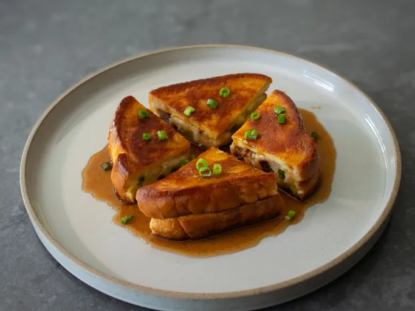

Loaded Baked Potato French Toast
Loaded baked potato French toast is the most delicious mash-up I have ever created. Mashed potatoes, Cheddar cheese, green onions, crispy bacon, and sour cream bring all the flavors of a classic loaded baked potato to savory French toast, served with a spicy, sweet, and sour maple syrup.

Ingredients
Filling
- 2 medium russet potatoes
- 1 teaspoon Kosher salt
- 1/2 teaspoon freshly ground black pepper
- 1 pinch cayenne
- 2 ounces Cheddar cheese, grated
- 1/4 cup sliced green onions, plus more as needed for garnish
- 1/2 cup crispy fried bacon bits
- 1/4 cup sour cream
French Toast:
- 5 large eggs
- 1/2 teaspoon kosher salt
- 1/2 cup milk
- 12 slices white sandwich bread
- 4 tablespoons unsalted butter
Menu
Home